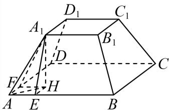
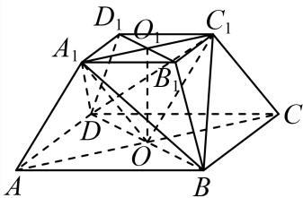
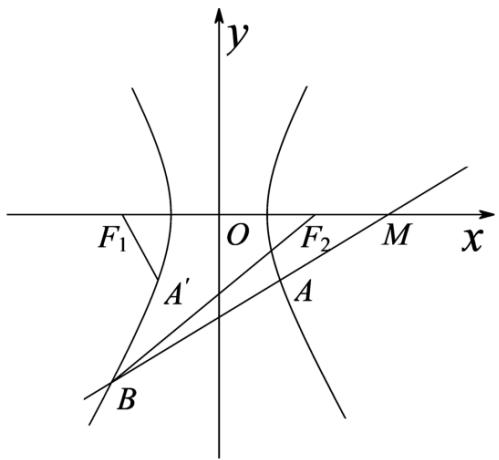

01 【来源：26春考回忆·1】
查看所属专题已知集合 ，，若 ，则 ______。
答案与解析
答案
4
解析
由 ，集合 的元素4必须属于 ，故 。
整卷阅读 · 教师版 · 21 题
按来源题号排列；内容来自分类汇编，仍需回源核对。
没有找到匹配题目。
已知集合 ，，若 ，则 ______。
4
由 ，集合 的元素4必须属于 ，故 。
关于 的不等式 的解集为______。
(-2,3)
由 0可得： ，解不等式可得其解集.
由 0可得
解得:-2 < x < 3,
所以不等式 0的解集为(-2,3).
故答案为：(-2,3).
已知 ，，若 ，则 ______。
2
由 ，有 ，解得 。
在平面直角坐标系中，点 到直线 的距离为______。
根据点到直线的距离公式求解即可.
根据点到直线的距离公式可得
故答案为：
的二项展开式中， 的系数为______。
18
二项展开式通项为 。
令 ，得 ，故所求系数为 。
若 ，，且 ，则 的最大值是______。
2
由 ，得 。当且仅当 ，即 时等号成立，因此最大值为2。
在 5 个人中选 3 个人去演讲，若甲一定去，则一共有______种选法。
6
结合组合知识求解即可.
由题意，甲一定去，则从剩下的4人中任选2人即可，
则一共有 种选法.
故答案为：6.
已知点 为抛物线 上一点，若点 到 的焦点的距离是 到 轴的距离的两倍，则点 的横坐标是______。
1
设 ，根据条件，利用抛物线的定义得 即可求解.
因为抛物线Γ: 的焦点为F(1,0)，准线方程为x = −1，设 由题有 ，解得
故答案为：1.
已知 ，对于所有满足 的复数 ，都有 的最小值与 的最小值相同，则 ______。
3
由 ，复数 对应的点在以原点为圆心、 为半径的圆上。
表示圆上一点到 的距离，故其最小值为 。
因为 ，点 到原点的距离为 ，所以 的最小值为 。
由题意，。结合 ，得 。
故答案为：。
在 中， 在边 上，且 ，， 与 所成的夹角为 ，则 的最大值为______。

设 ，。
由三等分关系得 ，。
令 ，则 ，。因此 当 时取到最大值 。
已知椭圆 与椭圆 相交于 四点，且与 和 的四个焦点在同一个圆上，则 ______。
四个焦点关于两坐标轴对称，故所求圆以原点为圆心。两个椭圆的半焦距相等，有 ，所以 ，圆方程为 。
交点同时满足 及 ，得 。代入第二椭圆： 整理得 。由 ，得 。
有一个油壶，壶身视为圆柱，壶嘴视为直线且不计容积，壶底直径 6.4 厘米，壶身高 16 厘米，壶内油液面高 12.1 厘米，壶嘴长 13.4 厘米，与壶身夹角为 ，壶嘴最低点距壶底 3 厘米，将壶身向壶嘴方向至少转______度可使油倒出（精确到 ）。


。
沿用图中的记号：壶嘴最低点、最高点分别为 ，，；轴截面矩形宽6.4、高16。设倾斜角为 。油开始倒出时水平液面经过 ，且与两侧壁交于 。
当液面未触及顶底时，由圆柱截面对称性及体积不变，液面在轴线处的高度仍为12.1。
取 的中点 ，过 作 ，则 ，，，从而 。
由 ，，正弦定理给出 于是 ，故 此时两侧液面高度为 ，均在0与16之间，所用几何模型成立。
倾斜角增至该值时，液面首次到达壶嘴端点，所以最小角度为 。
校订说明：原解析将正弦定理中的 误印为 ，与上一行角度及下一行展开不符，现已纠正；同时按题目精度写为两位小数。

下列数列中是等差数列也是等比数列的是（ ）。
A.
B.
C.
D.
C
设公差为 、公比为 ，则 。若 ，各项必须为同一非零常数，又迫使 ，矛盾。因此 ，即非零常数列。选项C符合。
已知 ，则下列不等式恒成立的是（ ）。
A.
B.
C.
D.
C
对A，取 ，则 ；对B，取 ，则 ；对D，取 ，则 。由 得 ，故C恒成立，选C。
平移对称法在几何学中具有重要的应用。设平面直角坐标系 中有一图形 ，过 内任意一点 作垂直于 轴的直线 ，满足 为一线段。现沿 方向平移这些线段，使得它们的中点均在 轴上，这样叫做平移对称法。对于 、、直线 和直线 围成的封闭图形 ，对它进行一次平移对称，得到的图像大致为（ ）。


A
方法一：当 ，上下边界纵坐标分别为1与0，中点为 ，平移后为 ；当 ，上下边界为 ，中点为 ，平移后为 。由此排除B、C、D，选A。
方法二：竖直线段长度为 。中点移至 轴后，上下边界分别为 和 ，，故图形由直线围成，选A。

对于函数 ，，设 。对于点集 ，若存在 ，使得任取 ，总有 ，则称 为“最低点”。对于函数 和 ，以下说法中正确的是（ ）。
A. 若 和 都有最小值，则 有最低点；
B. 若 有最低点，则 和 都有最小值；
C. 若 或 有最小值，则 有最低点；
D. 若 有最低点，则 或 有最小值。
D
A错误：取 ，，两函数都有最小值，但 。
B错误：取 ，。交集为 ，有最低点 ，但 无最小值。
C错误：取 、，定义域均为 。 有最小值，而 的纵坐标无下界。
D正确：设 是并集的最低点。
不妨它属于 ，则 ；又 ，由最低点定义 ，故相等。
对 定义域内任意 ，都有 ，所以 取得最小值。
属于 时同理。
故选D。
某兴趣班共 150 人，年龄分布及兴趣爱好统计如下：
| 年龄 | 剪纸 | 摄影 | 画画 | 人数 |
|---|---|---|---|---|
| 8 | 45 | |||
| 10 | 55 | |||
| 6 | 50 |
（1）现采用分层抽样抽取 30 人，其中抽到年龄在 岁的有多少人？
（2）该兴趣班 150 人的平均年龄是多少？
（3）现从 150 人中任意抽选 1 人，记抽到的学员年龄在 为事件 ，记抽到学员爱好摄影为事件 。事件 与 是否独立？请说明理由。
9;
不相互独立，理由见解析.
（1）分层抽样人数为 。
（2）以各年龄区间中点30、40、50代表该组年龄，估计平均年龄为
（3），，。因 ，事件A与B不相互独立。
如图所示正四棱台 ，其中 ，。

（1）当 时，求 和平面 所成角；
（2）证明： 平面 ；若棱台高为 3，求三棱锥 的体积。
证明见解析，体积为 8
（1）过 作 平面 ，过 作 、。
由正棱台性质，，四边形 为正方形，故 。
两底面平行，所求角等于 。
由 得 ，故为 。
（2）令 ，。
有 且 ，所以四边形 为平行四边形，。
因 平面 ，而 不在该平面内，故 平面 。
又 、，故 平面 。
高为3时，。
分割体积得


已知函数 。
（1）当 ，，求函数 在 处的切线方程；
（2）若函数 的最小正周期为 ，且 在 上恰好有 1351 个解，求 的取值范围。
或
（1）由 及 ，得 。
于是 ，，切线为 。
（2）由周期 得 。
令 ，则 。
方程的根为 或 ，。
由于 ，前675个完整周期恰含1350个根。剩余长度 的半开区间 必须恰含一个根。
若 ，必须包含 而不包含 ，故 ，即 。
若 ，剩余区间恰含 ，均满足。若 ，剩余区间无根，不满足。
故 。
已知双曲线 ，过点 作不垂直于 轴的直线 交双曲线 于 两点。
（1）求双曲线离心率；
（2）若点 ，点 在双曲线的右支上，且 是 的中点，求直线 的斜率；
（3）若 ， 分别是双曲线 的左右焦点， 是 关于 轴的对称点，若存在直线 使得 ，求 的取值范围。
。
。
。
（1），故离心率 。
（2） 为 中点，故 。代入双曲线得 。由 在右支，取 ，故
（3）斜率为0时两相关向量共线且非零，不满足。
斜率非零时设 ，其中 （题设排除竖直线），。
联立得 有两个交点要求 且 ，并有 ，。
由 ，数量积为零等价于 代入韦达关系，得 。
判别式条件化为 ；结合 ，得 。
再由 ，得 。
这些条件下可取非零 ，两交点和垂直条件均成立，故

设 是定义在 上的函数。定义性质 ：若对任意 ，当 时，，则称函数 具有“性质 ”。
（1）判断函数 是否具有“性质 ”；
（2）若分段函数 具有“性质 ”，求所有满足条件的实数 和 的解；
（3）已知 的值域为 ，且在 上是严格增函数，证明： 是偶函数的充要条件是 具有“性质 ”。
没有，理由见解析
证明见解析
（1）不具有。取 ，虽 ，但 。
（2）取 ，由性质 可得 、。
若 ，取 ，则 。
令 ，有 ，而 ，矛盾。
因此 。
对 ，比较 得 ，对任意 成立，所以 ；比较 得 ，对任意 成立，所以 。
故 。
反之 时 ，确有性质 。
（3）若有性质 ，假设某个 满足 。
令两值中较大者为 ，较小者为 ，则 。
当 时 ，当 时 ；当 时只有两个端值。
因此 却不在值域中，矛盾。
故 为偶函数。
反之，若 为偶函数，由它在 严格增，当 时有 ，故有性质 。